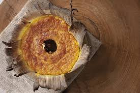

Bolo de milho-verde

Ingredientes
5 ovos
395 g de milho-verde
250 g de coco ralado
395 g de leite condensado
1 colher de sopa de fermento químico em pó
Óleo para untar
Em um liquidificador, coloque todos os ingredientes, menos o fermento, e bata até obter uma consistência homogênea.
Adicione o fermento químico e bata novamente para incorporar. Após, transfira a mistura para uma assadeira redonda, com um furo no meio, untada com óleo, e leve ao forno preaquecido a temperatura média até dourar. Sirva em seguida.
Receita de Biscoito de aveia e mel
Ingredientes:
2 ovos
80 gramas de mel
110 gramas de aveia em flocos
3 gramas de fermento
1 colher de café de essência de baunilha
Comece colocando os flocos de aveia em uma tigela e adicione os ovos. Mexa bem até formar uma massa homogênea.
- Passo 2
Adoce a mistura com mel; além disso, você pode aromatizar com algumas gotas de essência de baunilha. Para que fiquem mais fofos, acrescente o fermento em pó no final.
- Passo 3
Misture novamente até que todos os ingredientes estejam bem incorporados. Se preferir, neste momento você pode adicionar pedacinhos de chocolate ou nozes para dar mais sabor e textura.
- Passo 4
Em uma assadeira com tapete de silicone ou papel manteiga, coloque porções da massa. Para facilitar, use uma colher de sorvete: assim, todos os biscoitos de aveia e mel saudáveis terão o mesmo tamanho. Você também pode usar duas colheres, colocando a massa e dando-lhes uma forma circular.
- passo 5
Asse os biscoitos de mel e aveia imediatamente a 175 °C por cerca de 20 minutos, ou até que estejam dourados. Em seguida, retire-os do forno, deixe esfriar para que não se desmanchem e eles estarão prontos para servir e saborear. Bom apetite! Conte-nos nos comentários a sua opinião e compartilhe conosco uma foto do resultado final.
Receita de Bolo de caneca low carb
Ingredientes:
1 unidade de banana prata
1 unidade de ovo
1 colher de chá de chocolate em pó 50%
1 colher de café de açúcar mascavo
1 colher de café de fermento químico
3 colheres de sopa de farinha de amêndoas
Utensílios:
Micro-ondas
Caneca
Fouet
Bowl
Garfo
Comece separando os ingredientes para o preparo do seu bolo de caneca low carb. Separe a banana-prata ou a banana da sua preferência. Separe o chocolate em pó, o açúcar mascavo, a farinha de amêndoas, o ovo e o fermento químico.
-Passo 2
Feito isso, retire a casca da banana e corte em pedaços. Em seguida, amasse a banana com um garfo para que fique bem homogênea. Transfira a banana amassada para um bowl e adicione o açúcar mascavo. Em seguida, mexa tudo muito bem com o auxílio de um fouet.
- Passo 3
Depois de adicionar e mexer bem os ovos, o açúcar mascavo e a banana, entre com o chocolate em pó 50% e a farinha de amêndoas.
Novamente, misture tudo muito bem com o auxílio de um fouet. Deixe tudo bem misturado e homogêneo.
- Passo 4
Depois de todos os ingredientes já adicionados e devidamente misturados, adicione o fermento químico e mexa bem com um fouet para que abranja toda a massa.
- Passo 5
Com a massa já pronta, transfira o conteúdo do bowl para uma caneca e leve ao micro-ondas por 2 minutos. Esse tempo é suficiente para que o bolo asse e fique bem fofinho.
Não é necessário assar por mais tempo, pois pode endurecer a massa e o bolo ficará bastante ressecado.
AVALIAÇÃO: 4,7⭐⭐⭐⭐
"Muito boa, pratos bons, mas o preço por prato, está meio salgado."
"Comida incrível, chefe simpático, bons preços e produtos com qualidade."
AVALIAÇÃO: 4,5⭐⭐⭐⭐
""Comida boa, música boa, pessoas boas, espaço agradável e acolhedor."
"Funcionários atenciosos, ambiente agradável, banheiro limpinho, comida gostosa.""